Echoes of India
Every artifact carries a story. Every carving holds a memory.
From the ancient civilizations of the Indus Valley to the artistic
traditions that shaped generations, India's heritage lives through
the objects left behind.
These artifacts are more than relics of the past—they are echoes
of the people, beliefs, craftsmanship, and cultures that shaped India.
Step into the past and discover the stories preserved through time.
India Through the Ages
Explore the artistic and cultural
legacy of India through the ages.
Era 1 — Indus Valley Civilization
c. 2500 BCE
One of the earliest urban civilizations of South Asia, known for
advanced cities, trade, craftsmanship, seals, sculptures, and
sophisticated water management.
|

Pashupati Seal
A small steatite seal depicting a horned seated figure
surrounded by animals. It provides insight into the
symbolism and artistic traditions of the Indus Valley
Civilization.

Priest-King Statue
A carved figure of a bearded man wearing a patterned robe.
Its identity remains uncertain, but the sculpture
demonstrates the craftsmanship of the Indus Valley period.

The Great Bath
A large brick-lined structure at Mohenjo-daro, often
associated with ritual or ceremonial activities. Its
construction reflects the advanced engineering of the city.
Era 2 — Mauryan Empire
c. 322 CE
The Mauryan period brought political unification and major advances
in stone architecture, sculpture, pillars, stupas, and Buddhist art.
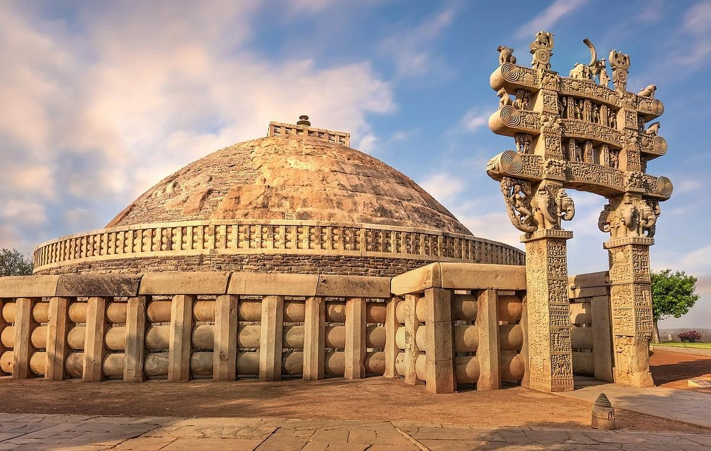
Sanchi Stupa Gateways
Elaborately carved gateways decorated with scenes from
Buddhist traditions, mythology, animals, and everyday life.
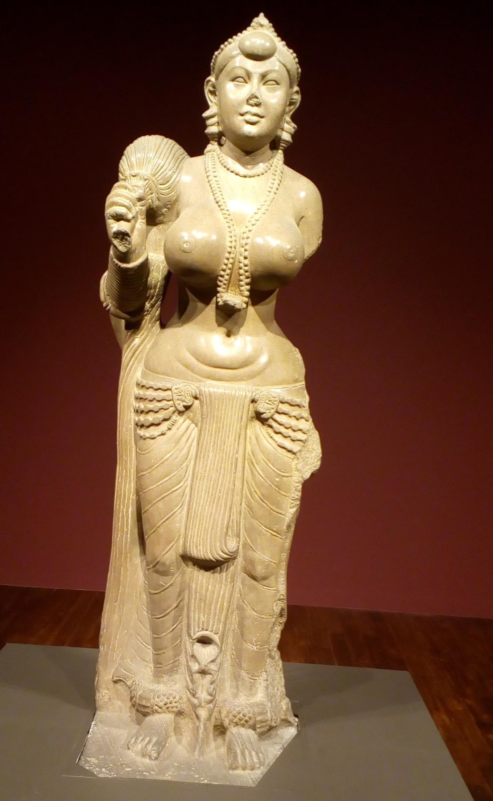
Yakshi of Didarganj
A highly polished stone sculpture representing a Yakshi.
It is celebrated for its smooth surface, graceful form,
and remarkable craftsmanship.
Era 3 — Buddhist Art & Cultural Exchange
c. 1st century CE
Buddhist art developed across India as ideas and artistic traditions
travelled between regions. Gandhara, Mathura, Ajanta, and Nalanda
became important centers of Buddhist artistic expression.
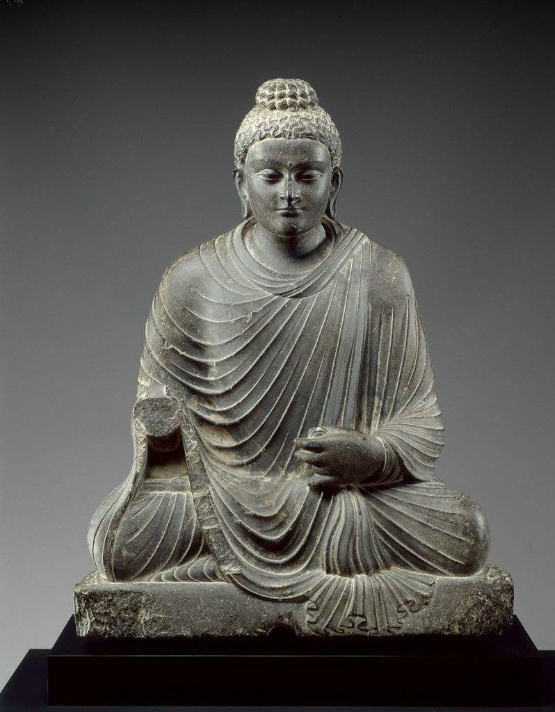
Gandhara Buddha
Gandharan sculptures combine Buddhist subjects with
artistic influences associated with the Greco-Roman world,
creating a distinctive sculptural style.
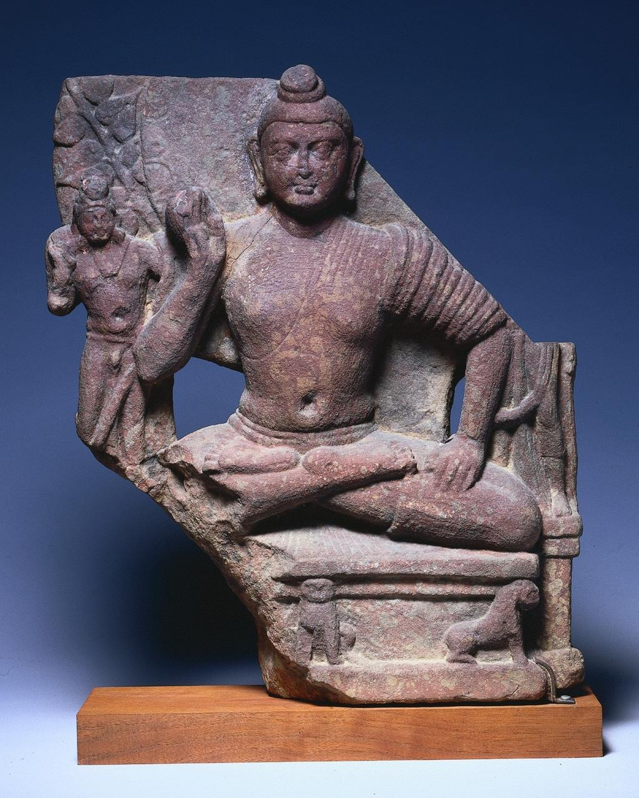
Mathura Buddha
Mathura developed a distinctive Indian style of Buddhist
sculpture, characterized by powerful forms and simplified
drapery.
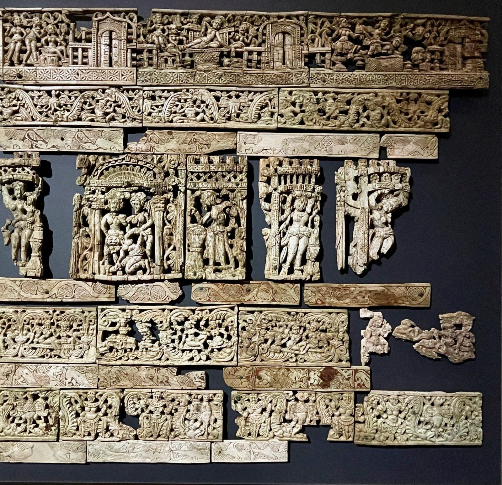
Begram Ivory Carvings
Intricately carved ivory objects that demonstrate the
artistic exchange and craftsmanship of the ancient
Gandhara region.
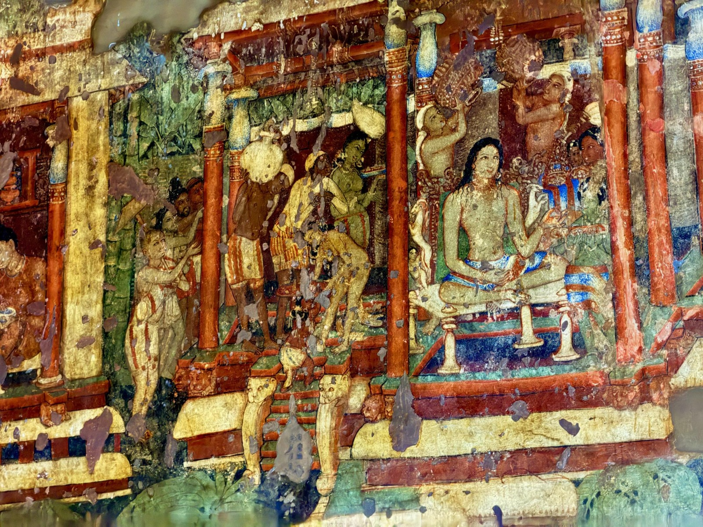
Ajanta Cave Paintings
Detailed paintings depicting Buddhist stories, figures,
courtly life, and rich decorative elements.
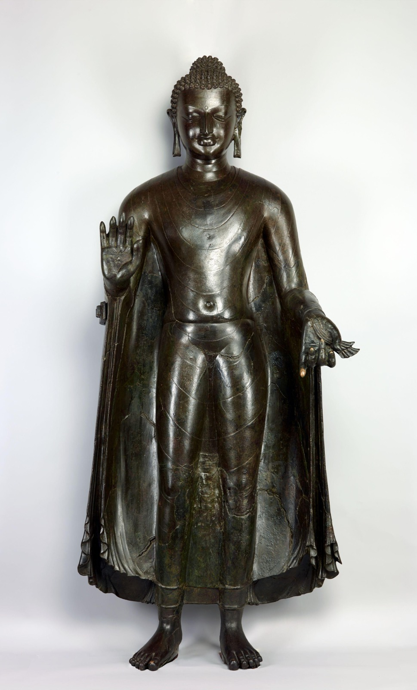
Sultanganj Buddha
A monumental copper Buddha known for its graceful posture,
flowing robes, and sophisticated metalworking technique.
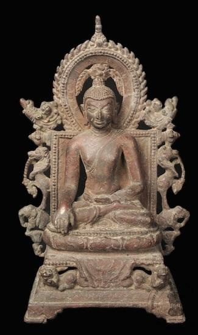
Nalanda Bronze Buddha
A bronze Buddhist sculpture associated with the artistic
traditions that flourished around the famous Nalanda
learning center.
Era 4 — Medieval Temple Architecture
7th–13th century CE
Medieval India saw remarkable growth in temple architecture and stone sculpture.
Regional kingdoms created elaborate temples decorated with deities, mythology, animals, dancers, and
intricate patterns.
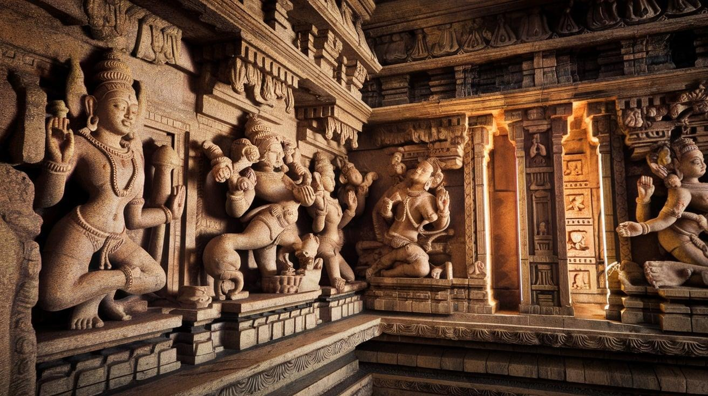
Ellora Kailasa Temple Sculptures
The Kailasa Temple is a remarkable rock-cut temple dedicated to Lord Shiva, carved directly from
a single mass of rock. Its detailed sculptures showcase the extraordinary engineering and
artistic skill of the period.
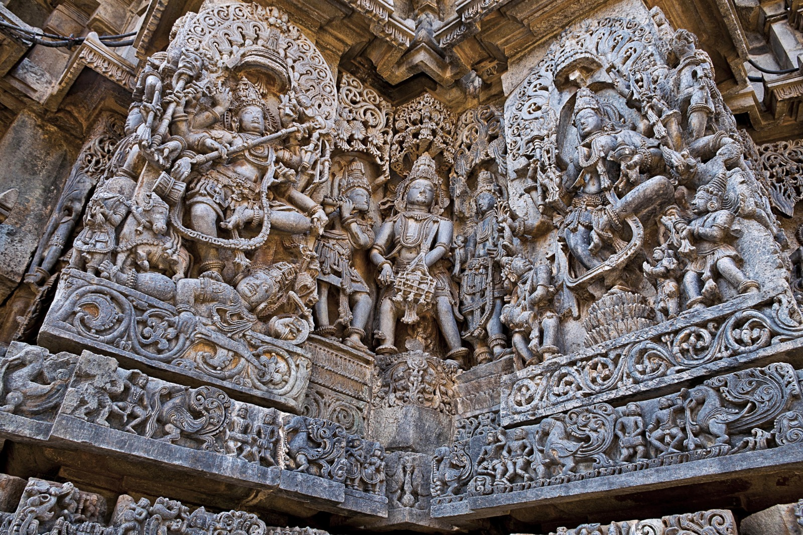
Hoysaleswara Temple Sculptures
The Hoysaleswara Temple at Halebidu is famous for its intricate carvings of deities, animals,
dancers, and mythological scenes. The detailed stonework reflects the exceptional craftsmanship
of the Hoysala period.
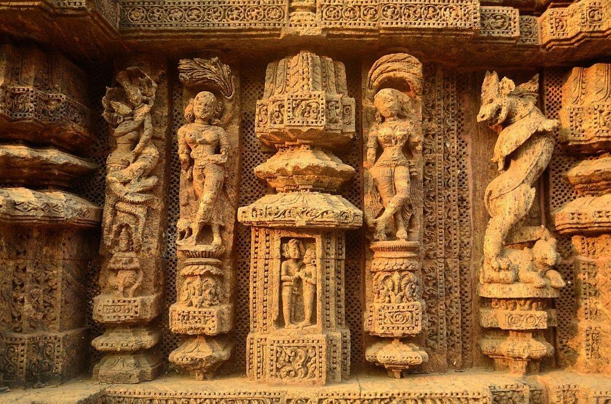
Sun Temple Konark Sculptures
The Konark Sun Temple was designed as a monumental chariot dedicated to Surya, the Sun God. Its
richly carved wheels, horses, and sculptures demonstrate the artistic excellence of 13th-century
Odisha.
Era 5 —Medieval Kingdoms & Early Modern India
16th-18th century CE
Powerful regional kingdoms shaped India's political, military, and artistic traditions
during this period. Royal courts encouraged skilled craftsmanship in architecture, metalwork, weapons,
textiles, and decorative arts.
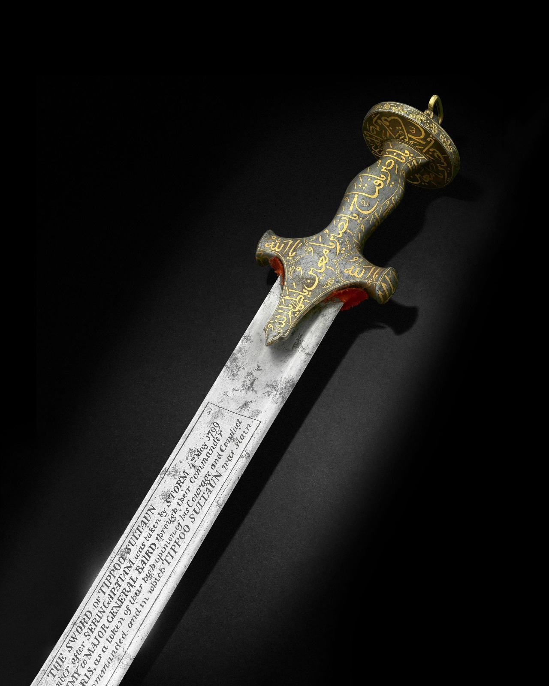
Tipu Sultan's Sword
This sword is associated with Tipu Sultan, the ruler of Mysuru known for his resistance against
British expansion. Its craftsmanship and decoration reflect the military and artistic traditions
of late 18th-century Mysuru.